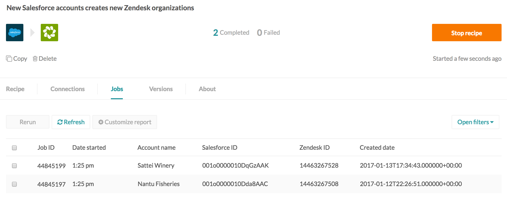

Triggers
Some basic trigger rules
- Each trigger event will be processed only once. i.e. no duplicates
- Trigger events will be processed in the same order as when the events where created (in the app)
Trigger types
Triggers can be classified into different types based on how they check for and retrieve new events
Polling,
Batch,
Real-time,
Scheduled,
Clock/Timer
Polling triggers
Polling triggers check for new events by periodically querying the app to see if new events are available. The polling frequency is determined by the type of Workato plan, and can be as low as 5 minutes.
Each poll may yield multiple events ready for processing i.e. a single poll can result in several jobs being created.
When the recipe is first started, the polling trigger fetches all events after the From date. Subsequently, polls are made at regular intervals as dictated by the plan type.
When the recipe is stopped, polling triggers stop fetching events from the trigger app. However, if the recipe is started again, polling triggers will fetch all events since the recipe was stopped.
Example: Polling trigger
A Workato account on the Business plan has a 5-minute polling interval, as displayed on their polling triggers.
 Trigger hint regarding the specific polling interval
Trigger hint regarding the specific polling interval
The recipe polls every 5 minutes for new accounts created in Salesforce, and fetches any new accounts. If there were multiple accounts created, each will result in a new job.
If the recipe is stopped on 1 Feb 2017, midnight PST, it will cease to fetch trigger events. However, when the recipe is started again, lets say on the 10 of March midnight PST, Workato will fetch all Salesforce accounts created since Feb 1.
Batch triggers
Batch triggers are similar to polling triggers in terms of how they fetch new events. But, where polling triggers will create a new job for every trigger event, batch triggers will create a new job for a group of events. This group size i.e. batch size can be specified by the end user as part of the trigger configuration. Typical values for batch size are 100.
Batch triggers are generally used for increasing throughput.
For further details about batch triggers, refer to the Batch processing article here.
Real-time triggers
Real-time triggers are usually built on top of an asynchronous notification mechanism. Real-time triggers typically require letting the app know that you are interested in a specific event, and then when that event occurs, the app will send a notification. Webhooks are one such mechanism. The advantage of such a mechanism is that there is no delay as well as it is efficient because you are polling every so often to check for new events.
Real-time triggers supported by Workato (this excludes HTTP real-time triggers) using polling at start i.e. when recipe is first started, the recipe does a poll to fetch all events after the From date.
Scheduled triggers
Scheduled triggers are executed at specified days and times, hourly, daily, monthly, etc.
 Various schedule options for Salesforce scheduled search trigger
Various schedule options for Salesforce scheduled search trigger
At the scheduled time or interval, this trigger will fetch all events matching the specified criteria. Also, unlike other triggers, scheduled triggers will return events that have already been picked up previously.
Scheduled triggers will return events in batches, similar to how batch triggers work. Users can specificy the maximum batch size. For e.g. if the batch size is set to 100 and 420 new events are identified, 5 new jobs will be created. The first four jobs will have 100 events each and the fifth will have 20 jobs.
Clock/timer
Add definition and example.
Since/From
The Since or From setting enables fetching of historical trigger events from a specified date and time. i.e. instead of picking up new trigger events (events created since recipe was started) this enables picking events that have already occurred.
In the example below, the New Salesforce object trigger has a From date as 1 Jan 2017, midnight PST and the 'accounts' object is selected.
 Setting the Since date for the trigger. Trigger will only pick up new accounts created since midnight of Jan 1, 2017
Setting the Since date for the trigger. Trigger will only pick up new accounts created since midnight of Jan 1, 2017
When the recipe is started, only Salesforce accounts created after 1 Jan 2017, midnight PST will be picked up, as viewed from the created date column on the job report.
 Job report shows that only Salesforce accounts created after Jan 1, 2017 were processed
If the trigger was New/updated Salesforce object, only Salesforce accounts created or updated after 1 Jan 2017, midnight PST will be picked up.
However, not all triggers have the Since/From parameter. For such triggers, the date and time from which trigger events will be fetched is predetermined by default, usually as an offset from the time the recipe is started. Common values are:
- When recipe is first started
- An hour before recipe is first started
- A day before recipe is first started. This offset is usually communicated in the trigger hint for the connector.
The Since/From value can only be set once, and will be locked from further changing after the recipe has been started for the first time.
 Trigger hint regarding the default offset of 1 hour ago for Google Calendar
Trigger hint regarding the default offset of 1 hour ago for Google Calendar
Trigger conditions
Trigger conditions are additional rules that define what kind of trigger events should be selected for processing. e.g. You can specify that only Salesforce accounts from California must be procssed.
Trigger filters are evaluated by Workato i.e. Workato retrieves all trigger events, and then filters out the ones that do not meet the rules specified in the trigger condition.
To add a trigger condition, check the Trigger IF checkbox. The trigger datatree will appear, displaying the variables that can be used to formulate the trigger condition.
 Checking the Trigger IF checkbox brings up trigger condition fields to be configured
Checking the Trigger IF checkbox brings up trigger condition fields to be configured
Define the trigger condition. The following ensures that only Salesforce accounts with a Warm rating value will be picked up by the trigger. Values are case sensitive and should be exact.
 Define the trigger condition
Define the trigger condition
To add an additional trigger conditions, select from the OR or AND in the picklist. The selected operator will define how all additional trigger conditions will be added.
 Adding another trigger condition with the OR operator
Adding another trigger condition with the OR operator
Define the additional trigger condition. Values are case sensitive and should be exact. The following ensures that accounts with a Hot rating value will also be picked up by the trigger. Notice that from the third trigger condition onwards, trigger conditions will be combined with the previously selected operator (OR or AND).
 Define the additional trigger condition. Subsequent trigger conditions has to use the same AND operator
Define the additional trigger condition. Subsequent trigger conditions has to use the same AND operator